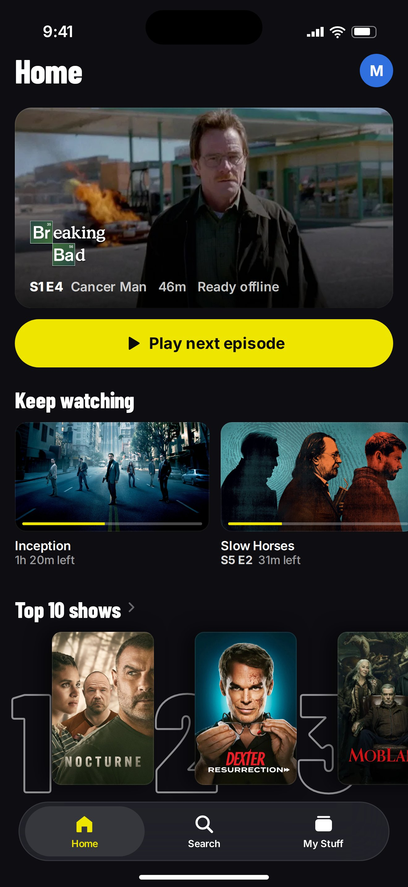
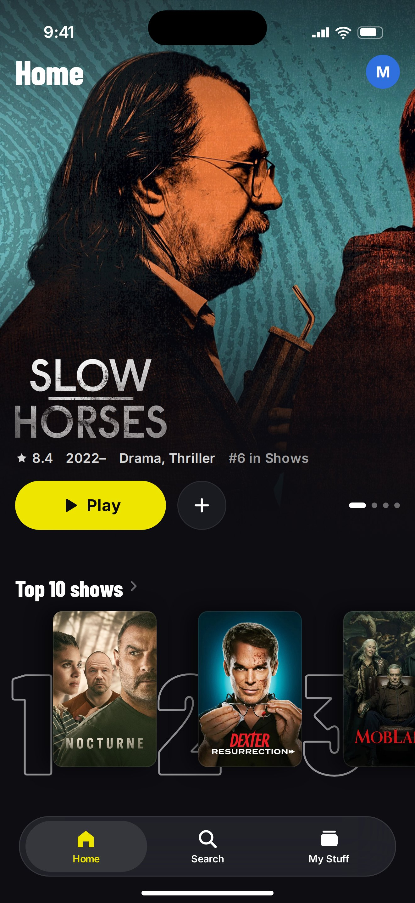
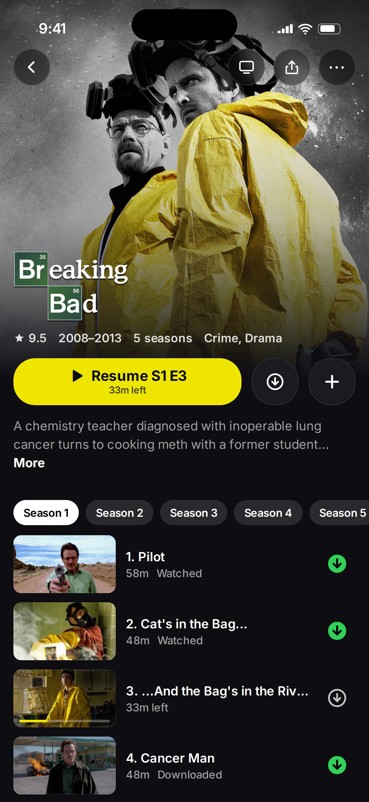
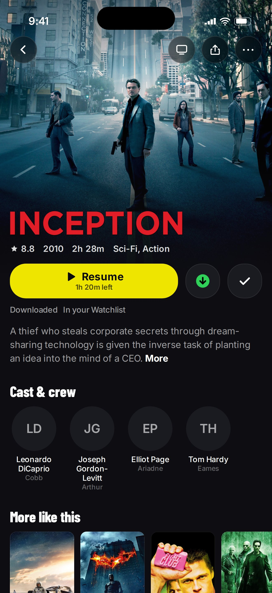
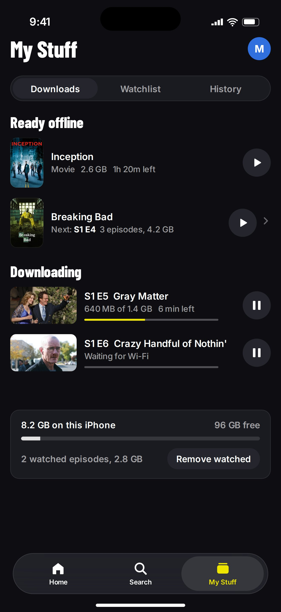

Merge picked by the UI/UX director: B's watch-first Home, A's cinematic title page, C's status-in-text. HTML mockups with real catalog artwork; Barlow Condensed stands in for SF Pro Condensed (it runs narrower).




